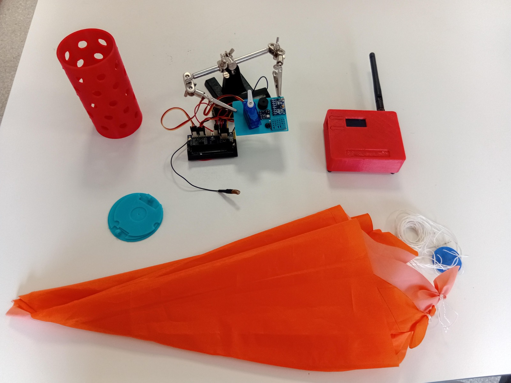

Observación
Sensores para conocer el ambiente y el movimiento del sistema.
CAN-SAT · ARGENTINA
SatVe es el CanSat de Extronix, un sistema compacto que registra el entorno durante un descenso controlado y envía sus datos a una estación terrena. Como misión secundaria, evalúa el desempeño del descenso y valida el registro y la transmisión de la información.
Conocer el proyecto ↓
SatVe está pensado para ser liberado desde un dron, descender de forma controlada y mantener el registro antes, durante y después del aterrizaje.
Durante la misión reúne información de aceleración, altitud, velocidad estimada, temperatura, humedad y presión atmosférica. Los datos se guardan y se transmiten mediante un enlace LoRa a la estación terrena.
Sensores para conocer el ambiente y el movimiento del sistema.
Comunicación LoRa para recibir información durante la misión.
Un sistema pasivo de descenso que acompaña el recorrido hasta el suelo.
EN POCAS PALABRAS
El sistema observa el ambiente y el movimiento, registra la información y transmite la telemetría a la estación terrena.
Diseñamos y probamos SatVe.
Somos Extronix, un equipo de la Escuela Experimental con énfasis en TIC, PRoA La Falda, Argentina.
SatVe reúne diseño mecánico, electrónica, programación y análisis de datos en una misión concreta: convertir un descenso en información útil.